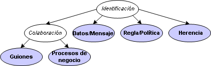

| Patrón de posibilidad: Identificación de servicio |
 |
|
| Descripción | Estructura de desglose de trabajo | Asignación de equipos | Utilización del producto de trabajo | ||||||
| Contexto |
|---|
Este apartado describe cómo obtener información sobre la forma en que Software Architect o Designer pueden identificar servicios. Este proceso de identificación y agrupación en clúster de servicios en Especificaciones de servicios y Proveedores de servicios se puede enfocar desde distintas perspectivas y las siguientes opciones se pueden utilizar solas o, lo que es más probable, en combinación con cualquier proyecto específico. La identificación de servicios es muy posiblemente una de las primeras tareas de modelado de soluciones orientadas a servicios. Por tanto, los errores realizados durante la identificación podrá pasar por tareas de diseño e implementación detalladas. El siguiente diagrama muestra los distintos enfoques a la identificación de servicios. No se excluyen entre sí pero la selección de cuál es el enfoque adecuado deberá tener en cuenta problemas de proceso y proyecto más amplios. Cada uno de los óvalos coloreados representa una de las técnicas descritas a continuación. Existen dos formas de identificación basadas en colaboración en las que la colaboración se puede identificar mediante un modelado de proceso empresarial o un modelado de guiones de uso.  No obstante, una de las primeras decisiones que deben tomarse, independientemente de los enfoques anteriores, es si la identificación se basa únicamente en la comprensión de operaciones que sean de posterior agregación a los servicios o si ya se conoce un conjunto de servicios y las operaciones se añaden a los servicios a medida que se identifican. Servicio primero; esta técnica es común en desarrollos basados en componentes u orientados a objetos en los que se identifiquen primero las clases de objetos o componentes, presumiblemente mediante una técnica de análisis para identificar la clase de "cosas" de los distintos dominios técnicos o empresariales. A continuación, se analizan las colaboraciones entre objetos, se identifican las operaciones (responsabilidades del objeto) y se añaden a las clases. En cierto modo, los servicios se pueden identificar a partir del análisis de dominios e ir aumentando con las operaciones identificadas en los siguientes enfoques. Operación primero; sin embargo, algunos críticos han señalado que los servicios no son como clases y objetos o componentes. Los servicios pueden gestionar un conjunto de recursos pero la relación servicio/recurso es totalmente diferente de la relación clase/objeto. Por esta razón, se requieren distintas técnicas de análisis que tiendan a favorecer la última identificación de servicios mediante la agregación de un conjunto de operaciones identificadas a grupos lógicos. Los ejemplos de esta actividad mostrarán el uso de una técnica de Servicio primero porque aquellas personas familiarizadas con instrucciones parecidas del Proceso unificado de Rational (RUP) la utilizarán más fácilmente. |
| Condicionado por sucesos | |
|---|---|
| Varias apariciones | |
| Continuo | |
| Opcional | |
| Planeado | |
| Se puede repetir |
© Copyright IBM Corp. 1987, 2006. Reservados todos los derechos. |